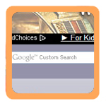

journal_nine(king_tut) {
For Journal 9 I chose another website that is largely successful but could benefit from some of Steve Krug's advice. The King Tut One website has a clean layout and obvious visual hierarchy but it breaks some web conventions.
}
'King Tut One's Purpose
King Tut One (also known as 'Ancient Egypt Online') has a conflicting homepage. It's very clear that this site has something to do with the ancient Egyptians, but looking at the primary navigation links at the top (where my eye was initially led) I'm unsure of it's purpose. On the one hand, the first two links (ignoring 'Home') are 'Articles' and 'Forum' which lead me to believe that this site welcomes a discussion of historical documents. That being said, the majority of the links at the top deal with 'Postcards', 'Free Ringtones', and 'Clip Art'. These links give the impression that the site offers free Egyptian-themed content.
Next, I noticed the links on the right-hand-side. These act as sub-categories for some ancient Egyptian content ('King Tut', 'Pyramids', 'Mummies', etc.). This leads me away from the content focus and back to the historical purpose of the site.
I then read the welcome blurb near the middle of the page. That cleared up the site's purpose in one sentence: "KingTutOne.com is an Ancient Egyptian resource center."
Critique
The site's layout is very effective. It centers the content on any monitor in an interesting way (the classic eye of Horus on either side). The persistent navigation follows this "centered" theme. The site id is a long banner that encompasses the entirety of the content instead of being delegated to the left-hand corner, which I think works for this particular layout.
That being said, the persistent navigation has some flaws. Although one of the primary navigation links is 'Home', I believe the site id should still serve as a link to the homepage.
The site has a search bar, but it is not a part of the main navigation box. For some reason, it is always located in the center of the site and I missed it for several minutes when I first visited the site. It is technically part of the site's primary navigation in the fact that it is on each page but, again, it's always hidden in the middle of the page.

The site does seem to comply with Steve Krug's advice to "omit words". The welcome blurb is very short and effectively conveys the purpose of the webpage. The other pages are equally as short, some have a single sentence (e.g. "Postcards").
Potential Improvements
The easiest change I would make is to turn the site id into a link to the homepage. This is such a web convention and takes nothing away from the layout.
Next, I would combine the "Postcards", "Free Ringtones", and "Clip Art" links in the primary navigation into one - possibly "Free Content" - and turn it into a drop down. I feel like these three links take away from the purpose of the site.